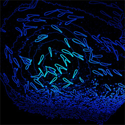
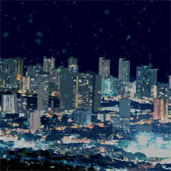
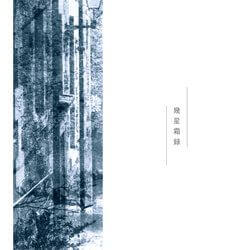
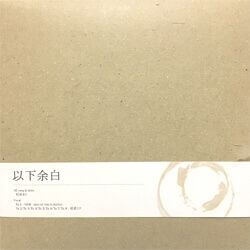

- Past target -Mato Sugita's Portfolio Site
Update
- NEWミニアルバム『呼吸不全』公開 + 収録曲の情報追加
- 606さんの楽曲『合字/ligature』のお手伝いをしました
- Discographyのデザイン変更および情報追加
- インスト楽曲追加『Dog year』
- サイトデザイン変更
- ボーカル楽曲追加『架空』
- 楽曲再生機能の追加 + インスト楽曲追加『Pixelationl』
- ミニアルバム『各人各様』公開 + 収録曲の情報追加
- Information項目の追加。今後の更新内容はこちらに記載
Music List
Vocaloid Original
Instrumental Original
Discography
-
呼吸不全4thミニアルバム
2019.07.10 Release
- 徒爾
- 架空
- 悪人探し
- 月並み
- 残響室
-

各人各様3rdミニアルバム
2019.01.05 Release
- 耳を塞げ
- ずっと
- たゆたうサカナ
- イーチアンサー
-

深夜二時2ndミニアルバム
2018.02.08 Release
- 歪な我儘
- 丑三つ、耿耿
- 欠陥構造
- ナンバーレス
-

幾星霜録1stミニアルバム
2017.04.29 Release
- 良心と上手くやれそうにない
- 終末論者の埋け墓
- 夕暮れに裁かれる
- 幾星霜録
- つないでひびく
-

以下余白1stアルバム
2016.04.29 Release
- 黒い炎
- 爽やかな風が吹いています。
- カラフリア
- 曰く付きの羊水
- レンタル家族
- 達磨
- 死に損ないの心臓
- 明順応
About Me
Name
Partner
Electric Guitar
Acoustic Guitar
Digital Audio Workstation
Audio Interface
Headphone
Microphone
杉田まと
初音ミクV3/ONE
Fender Stratocaster
Burny Les Paul Custom Type
Tokai Cat's Eyes
Steinberg Cubase Pro
Cakewalk SONAR
Roland DUO-CAPTURE
Sony MDR-7506
JTS MK-680